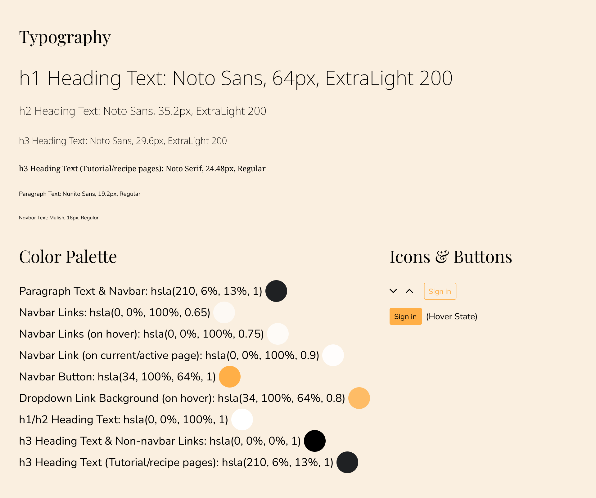

Wireframing
Before a UI can be brought to life through color, typography, or other elements of visual design, its fundamental layout should be known. Low fidelity wireframes are a relatively quick way to show pages' intended layouts. I knew that I wanted each page to have a navigation bar at the top, with introductory text over a background image immediately underneath:
Even though we haven't started visual designing yet, we can already see some UI principles here in the form of hiearchy. The heading and sub-heading text appear to be important to the page as a result of their fairly large font size and being centered in the header. It's clear that they describe what the page will be about. In the case of this particular page, they describe what the paragraphs below are about.
The next page was going to be about explaining different coffee brewers. For this, I thought that a two column layout would be fitting. Sub-heading and paragraph text could go on the left, and example images on the right.
Lastly, the third layout style for this project would be for tutorials.
Visual Designing - My Thought Process
I came up with a style guide, detailing the exact typefaces, fonts, colors, and so on:
Unlike my other projects on this portfolio, which I created the mockups for using Figma, I chose to write and design this website with HTML/CSS. This granted me the opportunity for some great practice with those tools, as well as the opportunity for seeing design from a perspective of code and implementation.

I made sure that the foreground colors on the navbar contrasted well enough to the background to fit accessibility guidelines. The active navbar link (to the current page) contrasts to the background with a ratio of 13.3 : 1. The two inactive links, which are a slightly lower opacity to indicate that they aren't the current page, have a contrast ratio of 7.53 : 1. The button has a contrast ratio of 8.82 : 1.
As for contrast between the background image and the heading and sub-heading text over it, I knew that I would have to decrease the brightness of the background image to increase the readability of the white heading text. I used the backdrop-filter CSS property to bring the background's brightness down to 62%. A shadow was also applied to the two pieces of heading text via the text-shadow property.
Regarding the paragraphs, two main styles were applied to make reading more comfortable. First of all, by restraining the paragraph width to 50% of the page width, the line width is such that paragraphs don't span too much or too little of the page. Second, by increasing the line-height in CSS, sufficient space is created between each line of text.


On hover, each link in the dropdown menu has a background color which is the same color as the button, just with a slightly lower opacity - rgba(34, 100%, 64%, 0.8) and rgba(34, 100%, 64%, 1), respectively. This is an example of keeping a consistent color pattern.
When the screen's width is smaller, the navbar can take on a hamburger menu, and the nav links can be shown when expanded:


Moving on to the next page, I began to design the two column layout of coffee brewers being explained. Hiearchy is further exercised here by the main section's sub-headings being larger than their associated paragraph text, but still smaller than the heading text in the header.


Repetition and rhythm are two design principles that are pretty easy to spot with this page. Each brewing method has a sub-heading, brief paragraph description, and link to a hypothetical guide on how to use it, and the brewing methods are equally spaced apart from each other.
Something else that you'll notice is the styling applied to the links to differentiate them from the regular paragraph text. Each link in the main section is underlined and italic to indicate that they are in fact links.

The tutorials example page follows a design of a centered text, step by step guide. The gestalt principle of similarity can be seen here - by each step having a subheading and paragraph text underneath, it's easy to tell that these are all connected or related, and that they're all steps of how to make a latte.
Proximity is another gestalt principle at play here. If the subheadings and paragraph text were spaced apart significantly farther, it would likely become confusing to tell which set of text a particular subheading was associated with.
Takeaways
I think that this brief project demonstrates that even in rather simple designs, there can be quite a lot of design principles at work! Consistency is something that I think can be especially noticed throughout these pages. Each page resembles one another through the continued use of the same fonts, colors, and overall styles. This consistency creates a sense of familiarity and recognition, which I think is important in any project.
Since I designed these mockups directly with HTML/CSS, I went ahead and deployed the project as well! Feel free to take a look at it.
Back to projects